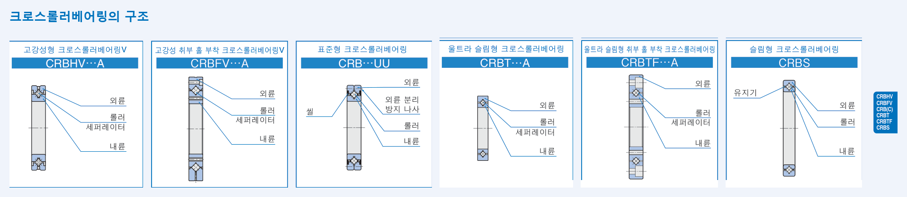

Cross Roller Bearings
내륜과 외륜 사이에 롤러를 직교시켜 배열한 콤팩트한 구조의 베어링입니다. 구름면이 선접촉이므로 하중에 의한 탄성 변위가 매우 적으며, 레이디얼 하중·축방향 하중 및 모멘트 등 모든 방향의 복잡한 하중을 1개의 베어링으로 동시에 지지할 수 있습니다. 콤팩트하면서 높은 강성과 회전 정밀도가 필요한 산업용 로봇·공작기계·의료기기 등의 선회부에 널리 사용됩니다.
아래 6개 타입으로 나뉩니다.
당사 IKO 카탈로그 규격 도면 · 크로스롤러베어링의 구조

외륜 · 롤러 · 세퍼레이터(또는 유지기) · 내륜 · 씰(밀봉형에만 있음)
호칭번호 구성 (예: CRBHV 150 25 A UU C1 P6)
형식기호 — CRBHV·CRBFV(세퍼레이터 부착) / CRBC(유지기부착)·CRB(총 롤러, 표준형) / CRBT·CRBTF(울트라 슬림형) / CRBS(슬림형, 유지기부착) 등 계열 구분
치수 — 베어링 내경(mm) · 베어링 폭(mm) 순으로 표기
보조기호-1 — T(내륜 취부 홀 나사) · 무기호(내외륜 카운터보어 홀 동일 방향) · D(내외륜 카운터보어 홀 역방향). 취부 홀 부착형(CRBFV·CRBTF)에만 적용되며, 울트라 슬림형 취부 홀 부착(CRBTF)은 T에만 적용됩니다.
보조기호-2 — 무기호(개방형) · UU(밀봉형) · U(편측 밀봉형)
보조기호-3 — 무기호(보통 틈새) · T1 · C1 · C2(틈새 등급)
등급기호 — 무기호(정밀도 0급) · P6/P5/P4/P2(정밀도 등급) · RP6/RP5/RP4/RP2(회전정밀도 등급)
내외륜 모두 일체형 구조(비분할)로 설치 오차가 적고 고정밀도·고강성이며, 롤러 사이 세퍼레이터로 회전이 원활해 비교적 고속 회전에도 적합합니다. 축경 20~300mm.
| 축경(mm) | 호칭번호(개방형) | 호칭번호(밀봉형) | 질량(kg) | d | D | B | r(min) |
|---|---|---|---|---|---|---|---|
| 20 | CRBHV 208A | CRBHV 208AUU | 0.04 | 20 | 36 | 8 | 0.3 |
| 25 | CRBHV 258A | CRBHV 258AUU | 0.05 | 25 | 41 | 8 | 0.3 |
| 30 | CRBHV 3010A | CRBHV 3010AUU | 0.12 | 30 | 55 | 10 | 0.3 |
| 35 | CRBHV 3510A | CRBHV 3510AUU | 0.13 | 35 | 60 | 10 | 0.3 |
| 40 | CRBHV 4010A | CRBHV 4010AUU | 0.15 | 40 | 65 | 10 | 0.3 |
| 45 | CRBHV 4510A | CRBHV 4510AUU | 0.16 | 45 | 70 | 10 | 0.3 |
| 50 | CRBHV 5013A | CRBHV 5013AUU | 0.29 | 50 | 80 | 13 | 0.6 |
| 60 | CRBHV 6013A | CRBHV 6013AUU | 0.33 | 60 | 90 | 13 | 0.6 |
| 70 | CRBHV 7013A | CRBHV 7013AUU | 0.38 | 70 | 100 | 13 | 0.6 |
| 80 | CRBHV 8016A | CRBHV 8016AUU | 0.74 | 80 | 120 | 16 | 0.6 |
| 90 | CRBHV 9016A | CRBHV 9016AUU | 0.81 | 90 | 130 | 16 | 0.6 |
| 100 | CRBHV 10020A | CRBHV 10020AUU | 1.45 | 100 | 150 | 20 | 0.6 |
| 110 | CRBHV 11020A | CRBHV 11020AUU | 1.56 | 110 | 160 | 20 | 0.6 |
| 120 | CRBHV 12025A | CRBHV 12025AUU | 2.62 | 120 | 180 | 25 | 1 |
| 130 | CRBHV 13025A | CRBHV 13025AUU | 2.82 | 130 | 190 | 25 | 1 |
| 140 | CRBHV 14025A | CRBHV 14025AUU | 2.96 | 140 | 200 | 25 | 1 |
| 150 | CRBHV 15025A | CRBHV 15025AUU | 3.16 | 150 | 210 | 25 | 1 |
| 200 | CRBHV 20025A | CRBHV 20025AUU | 4.00 | 200 | 260 | 25 | 1 |
| 250 | CRBHV 25025A | CRBHV 25025AUU | 4.97 | 250 | 310 | 25 | 1.5 |
| 300 | CRBH 30025A | CRBH 30025AUU | 5.29 | 300 | 360 | 25 | 1.5 |
단위: mm(질량은 kg) · 당사 IKO 카탈로그(크로스롤러베어링 치수표) 기준 · ※ 축경 300mm 규격은 카탈로그 원문에 다른 축경과 달리 “CRBH 30025A”(V 없음)로 표기되어 있습니다.
내외륜 모두 일체형 구조이고 내외륜에 취부 홀이 있어, 하우징이나 압착판 없이 볼트 온 방식으로 장치에 간단히 설치할 수 있는 고강성·고정밀도 타입입니다. 축경 10~115mm.
| 축경(mm) | 호칭번호(개방형) | 호칭번호(밀봉형) | 질량(kg) | d | D | B | r1(min) | r2(min) | PCD1(내륜) | 내륜 취부 홀 | PCD2(외륜) | 외륜 취부 홀 |
|---|---|---|---|---|---|---|---|---|---|---|---|---|
| 10 | CRBFV 108AT | CRBFV 108ATUU | 0.12 | 10 | 52 | 8 | 0.3 | 0.3 | 16 | 4-M3 통과 등분 | 42 | 6-φ3.4 통과 등분, φ6.5 깊은 카운터보어 깊이 3.3 |
| 20 | CRBFV 2012AT | CRBFV 2012ATUU | 0.31 | 20 | 70 | 12 | 0.3 | 0.3 | 28 | 6-M3 통과 등분 | 57 | 6-φ3.4 통과 등분, φ6.5 깊은 카운터보어 깊이 3.3 |
| 25 | CRBFV 2512AT | CRBFV 2512ATUU | 0.40 | 25 | 80 | 12 | 0.6 | 0.6 | 35 | 6-M3 통과 등분 | 67 | 6-φ3.4 통과 등분, φ6.5 깊은 카운터보어 깊이 3.3 |
| 35 | CRBFV 3515AT | CRBFV 3515ATUU | 0.66 | 35 | 95 | 15 | 0.6 | 0.6 | 45 | 8-M4 통과 등분 | 83 | 8-φ4.5 통과 등분, φ8 깊은 카운터보어 깊이 4.4 |
| 55 | CRBFV 5515AT | CRBFV 5515ATUU | 0.96 | 55 | 120 | 15 | 0.6 | 0.6 | 65 | 8-M5 통과 등분 | 105 | 8-φ5.5 통과 등분, φ9.5 깊은 카운터보어 깊이 5.4 |
| 80 | CRBFV 8022AT | CRBFV 8022ATUU | 2.63 | 80 | 165 | 22 | 0.6 | 1 | 97 | 10-M5 통과 등분 | 148 | 10-φ5.5 통과 등분, φ9.5 깊은 카운터보어 깊이 5.4 |
| 80 | CRBFV 8022A | CRBFV 8022AUU | 2.60 | 80 | 165 | 22 | 0.6 | 1 | 97 | 10-M5 통과 등분 | 148 | 10-φ5.5 통과 등분, φ9.5 깊은 카운터보어 깊이 5.4 |
| 80 | CRBFV 8022AD | CRBFV 8022ADUU | 2.60 | 80 | 165 | 22 | 0.6 | 1 | 97 | 10-M5 통과 등분 | 148 | 10-φ5.5 통과 등분, φ9.5 깊은 카운터보어 깊이 5.4 |
| 90 | CRBFV 9025AT | CRBFV 9025ATUU | 4.83 | 90 | 210 | 25 | 1.5 | 1.5 | 112 | 12-M8 통과 등분 | 187 | 12-φ9 통과 등분, φ14 깊은 카운터보어 깊이 12 |
| 90 | CRBFV 9025A | CRBFV 9025AUU | 4.67 | 90 | 210 | 25 | 1.5 | 1.5 | 112 | 12-M8 통과 등분 | 187 | 12-φ9 통과 등분, φ14 깊은 카운터보어 깊이 12 |
| 90 | CRBFV 9025AD | CRBFV 9025ADUU | 4.67 | 90 | 210 | 25 | 1.5 | 1.5 | 112 | 12-M8 통과 등분 | 187 | 12-φ9 통과 등분, φ14 깊은 카운터보어 깊이 12 |
| 115 | CRBFV 11528AT | CRBFV 11528ATUU | 6.81 | 115 | 240 | 28 | 1.5 | 1.5 | 139 | 12-M8 통과 등분 | 217 | 12-φ9 통과 등분, φ14 깊은 카운터보어 깊이 13.5 |
| 115 | CRBFV 11528A | CRBFV 11528AUU | 6.63 | 115 | 240 | 28 | 1.5 | 1.5 | 139 | 12-M8 통과 등분 | 217 | 12-φ9 통과 등분, φ14 깊은 카운터보어 깊이 13.5 |
| 115 | CRBFV 11528AD | CRBFV 11528ADUU | 6.63 | 115 | 240 | 28 | 1.5 | 1.5 | 139 | 12-M8 통과 등분 | 217 | 12-φ9 통과 등분, φ14 깊은 카운터보어 깊이 13.5 |
단위: mm(질량은 kg) · 당사 IKO 카탈로그(크로스롤러베어링 치수표) 기준 · AT=내륜 취부 홀 나사형, A=내외륜 카운터보어 홀 동일 방향, AD=내외륜 카운터보어 홀 역방향(축경 80/90/115mm에만 3종 모두 제공)
외륜이 2분할되어 있지만 운반·설치 중 분리되지 않도록 나사로 고정되어 있어 취급이 용이한 표준 타입입니다. 유지기부착(CRBC)·총 롤러(CRB) 두 방식이 있으며, 축경 30~800mm까지 폭넓게 공급됩니다.
| 축경(mm) | 유지기부착·개방형(CRBC) | 유지기부착·밀봉형(CRBC…UU) | 총롤러·개방형(CRB) | 총롤러·밀봉형(CRB…UU) | 질량(kg) | d | D | B |
|---|---|---|---|---|---|---|---|---|
| 30 | CRBC 3010 | CRBC 3010UU | CRB 3010 | CRB 3010UU | 0.12 | 30 | 55 | 10 |
| 40 | CRBC 4010 | CRBC 4010UU | CRB 4010 | CRB 4010UU | 0.15 | 40 | 65 | 10 |
| 50 | CRBC 5013 | CRBC 5013UU | CRB 5013 | CRB 5013UU | 0.29 | 50 | 80 | 13 |
| 60 | CRBC 6013 | CRBC 6013UU | CRB 6013 | CRB 6013UU | 0.33 | 60 | 90 | 13 |
| 70 | CRBC 7013 | CRBC 7013UU | CRB 7013 | CRB 7013UU | 0.38 | 70 | 100 | 13 |
| 80 | CRBC 8016 | CRBC 8016UU | CRB 8016 | CRB 8016UU | 0.74 | 80 | 120 | 16 |
| 90 | CRBC 9016 | CRBC 9016UU | CRB 9016 | CRB 9016UU | 0.81 | 90 | 130 | 16 |
| 100 | CRBC 10020 | CRBC 10020UU | CRB 10020 | CRB 10020UU | 1.45 | 100 | 150 | 20 |
| 110 | CRBC 11020 | CRBC 11020UU | CRB 11020 | CRB 11020UU | 1.56 | 110 | 160 | 20 |
| 120 | CRBC 12025 | CRBC 12025UU | CRB 12025 | CRB 12025UU | 2.62 | 120 | 180 | 25 |
| 130 | CRBC 13025 | CRBC 13025UU | CRB 13025 | CRB 13025UU | 2.82 | 130 | 190 | 25 |
| 140 | CRBC 14025 | CRBC 14025UU | CRB 14025 | CRB 14025UU | 2.96 | 140 | 200 | 25 |
| 150 | CRBC 15025 | CRBC 15025UU | CRB 15025 | CRB 15025UU | 3.16 | 150 | 210 | 25 |
| 150 | CRBC 15030 | CRBC 15030UU | CRB 15030 | CRB 15030UU | 5.30 | 150 | 230 | 30 |
| 200 | CRBC 20025 | CRBC 20025UU | CRB 20025 | CRB 20025UU | 4.00 | 200 | 260 | 25 |
| 200 | CRBC 20030 | — | CRB 20030 | — | 6.70 | 200 | 280 | 30 |
| 200 | CRBC 20035 | — | CRB 20035 | — | 9.58 | 200 | 295 | 35 |
| 250 | CRBC 25025 | CRBC 25025UU | CRB 25025 | CRB 25025UU | 4.97 | 250 | 310 | 25 |
| 250 | CRBC 25030 | — | CRB 25030 | — | 8.10 | 250 | 330 | 30 |
| 250 | CRBC 25040 | — | CRB 25040 | — | 14.8 | 250 | 355 | 40 |
| 300 | CRBC 30025 | CRBC 30025UU | CRB 30025 | CRB 30025UU | 5.88 | 300 | 360 | 25 |
| 300 | CRBC 30035 | — | CRB 30035 | — | 13.4 | 300 | 395 | 35 |
| 300 | CRBC 30040 | — | CRB 30040 | — | 17.2 | 300 | 405 | 40 |
| 400 | CRBC 40035 | — | CRB 40035 | — | 14.5 | 400 | 480 | 35 |
| 400 | CRBC 40040 | — | CRB 40040 | — | 23.5 | 400 | 510 | 40 |
| 400 | CRBC 40070 | — | CRB 40070 | — | 72.4 | 400 | 580 | 70 |
| 500 | CRBC 50040 | — | CRB 50040 | — | 26.0 | 500 | 600 | 40 |
| 500 | CRBC 50050 | — | CRB 50050 | — | 41.7 | 500 | 625 | 50 |
| 500 | CRBC 50070 | — | CRB 50070 | — | 86.1 | 500 | 680 | 70 |
| 600 | CRBC 60040 | — | CRB 60040 | — | 30.6 | 600 | 700 | 40 |
| 600 | CRBC 60070 | — | CRB 60070 | — | 102 | 600 | 780 | 70 |
| 600 | CRBC 600120 | — | CRB 600120 | — | 274 | 600 | 870 | 120 |
| 700 | CRBC 70045 | — | CRB 70045 | — | 46.5 | 700 | 815 | 45 |
| 700 | CRBC 70070 | — | CRB 70070 | — | 115 | 700 | 880 | 70 |
| 700 | CRBC 700150 | — | CRB 700150 | — | 478 | 700 | 1020 | 150 |
| 800 | CRBC 80070 | — | CRB 80070 | — | 109 | 800 | 950 | 70 |
| 800 | CRBC 800100 | — | CRB 800100 | — | 247 | 800 | 1030 | 100 |
단위: mm(질량은 kg) · 당사 IKO 카탈로그(크로스롤러베어링 치수표) 기준 · “—”는 해당 폭(B) 규격에 밀봉형(UU) 라인업이 없음을 뜻합니다(카탈로그 원문 표기).
롤러 타입 중 세계에서 가장 얇은 단면 높이 5.5mm·폭 5mm의 초저단면 베어링으로, 롤러 사이에 세퍼레이터가 조립되어 있어 기계·장치의 소형화·경량화에 공헌합니다. 축경 10~50mm.
| 축경(mm) | 호칭번호 | 질량(g) | d | D | B | r(min) |
|---|---|---|---|---|---|---|
| 10 | CRBT 105A | 9.0 | 10 | 21 | 5 | 0.15 |
| 15 | CRBT 155A | 11.9 | 15 | 26 | 5 | 0.15 |
| 20 | CRBT 205A | 14.8 | 20 | 31 | 5 | 0.15 |
| 30 | CRBT 305A | 20.7 | 30 | 41 | 5 | 0.15 |
| 40 | CRBT 405A | 26.5 | 40 | 51 | 5 | 0.15 |
| 50 | CRBT 505A | 32.3 | 50 | 61 | 5 | 0.15 |
단위: mm(질량은 g) · 당사 IKO 카탈로그(크로스롤러베어링 치수표) 기준
폭 치수 5mm로 매우 콤팩트하고 가벼운 베어링이면서 내외륜 모두 일체형 구조이고 내외륜에 취부 홀이 부착되어 있어 장치에 간단히 설치할 수 있습니다. 축경 10~40mm.
| 축경(mm) | 호칭번호 | 질량(g) | d | D | B | r(min) | PCD1(내륜) | 내륜 취부 홀 | PCD2(외륜) | 외륜 취부 홀 |
|---|---|---|---|---|---|---|---|---|---|---|
| 10 | CRBTF 105AT | 46 | 10 | 43 | 5 | 0.15 | 16 | 6-M2.5 통과 등분 | 35 | 6-φ2.9 통과 등분, φ5.5 깊은 카운터보어 깊이 2.8 |
| 20 | CRBTF 205AT | 66 | 20 | 53 | 5 | 0.15 | 26 | 6-M2.5 통과 등분 | 45 | 6-φ2.9 통과 등분, φ5.5 깊은 카운터보어 깊이 2.8 |
| 30 | CRBTF 305AT | 83 | 30 | 63 | 5 | 0.15 | 36 | 8-M2.5 통과 등분 | 55 | 8-φ2.9 통과 등분, φ5.5 깊은 카운터보어 깊이 2.8 |
| 40 | CRBTF 405AT | 103 | 40 | 73 | 5 | 0.15 | 46 | 8-M2.5 통과 등분 | 65 | 8-φ2.9 통과 등분, φ5.5 깊은 카운터보어 깊이 2.8 |
단위: mm(질량은 g) · 당사 IKO 카탈로그(크로스롤러베어링 치수표) 기준
내경에 비해 외경과 폭 치수가 작은 콤팩트한 베어링입니다. 유지기부착·세퍼레이터 부착·총 롤러 타입이 준비되어 있어 사용 용도에 따라 폭넓게 선정할 수 있습니다. 축경 50~200mm.
| 축경(mm) | 유지기부착·개방형 | 세퍼레이터부착·밀봉형 | 총롤러·개방형 | 총롤러·밀봉형 | 질량(g) | D | B | r(min) |
|---|---|---|---|---|---|---|---|---|
| 50 | CRBS 508 | CRBS 508AUU | CRBS 508V | CRBS 508VUU | 84 | 66 | 8 | 0.4 |
| 60 | CRBS 608 | CRBS 608AUU | CRBS 608V | CRBS 608VUU | 94 | 76 | 8 | 0.4 |
| 70 | CRBS 708 | CRBS 708AUU | CRBS 708V | CRBS 708VUU | 108 | 86 | 8 | 0.4 |
| 80 | CRBS 808 | CRBS 808AUU | CRBS 808V | CRBS 808VUU | 122 | 96 | 8 | 0.4 |
| 90 | CRBS 908 | CRBS 908AUU | CRBS 908V | CRBS 908VUU | 135 | 106 | 8 | 0.4 |
| 100 | CRBS 1008 | CRBS 1008AUU | CRBS 1008V | CRBS 1008VUU | 152 | 116 | 8 | 0.4 |
| 110 | CRBS 1108 | CRBS 1108AUU | CRBS 1108V | CRBS 1108VUU | 163 | 126 | 8 | 0.4 |
| 120 | CRBS 1208 | CRBS 1208AUU | CRBS 1208V | CRBS 1208VUU | 184 | 136 | 8 | 0.4 |
| 130 | CRBS 1308 | CRBS 1308AUU | CRBS 1308V | CRBS 1308VUU | 199 | 146 | 8 | 0.4 |
| 140 | CRBS 1408 | CRBS 1408AUU | CRBS 1408V | CRBS 1408VUU | 205 | 156 | 8 | 0.4 |
| 150 | CRBS 1508 | CRBS 1508AUU | CRBS 1508V | CRBS 1508VUU | 220 | 166 | 8 | 0.4 |
| 160 | CRBS 16013 | CRBS 16013AUU | CRBS 16013V | CRBS 16013VUU | 620 | 186 | 13 | 0.6 |
| 170 | CRBS 17013 | CRBS 17013AUU | CRBS 17013V | CRBS 17013VUU | 675 | 196 | 13 | 0.6 |
| 180 | CRBS 18013 | CRBS 18013AUU | CRBS 18013V | CRBS 18013VUU | 710 | 206 | 13 | 0.6 |
| 190 | CRBS 19013 | CRBS 19013AUU | CRBS 19013V | CRBS 19013VUU | 740 | 216 | 13 | 0.6 |
| 200 | CRBS 20013 | CRBS 20013AUU | CRBS 20013V | CRBS 20013VUU | 780 | 226 | 13 | 0.6 |
단위: mm(질량은 g) · 당사 IKO 카탈로그(크로스롤러베어링 치수표) 기준 · d(내경)=축경 값과 동일
※ 위 표는 당사 IKO 카탈로그(크로스롤러베어링 치수표)를 기준으로 작성했습니다. 정밀 가공·발주 전에는 반드시 당사 정식 규격표 원본으로 최종 확인하시기 바랍니다.